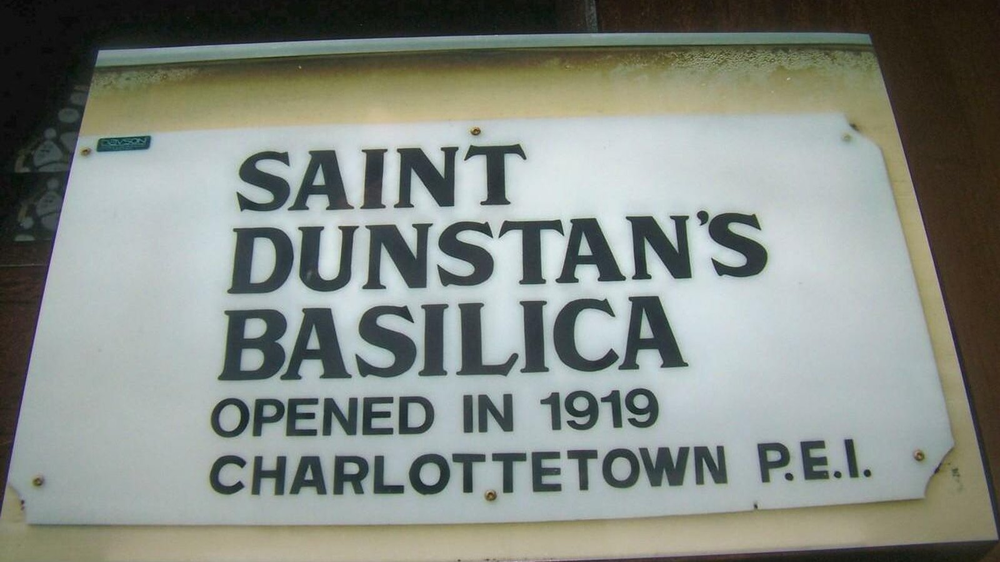

Welcome
Welcome to the parish website.
St. Dunstan's Basilica Parish, founded in 1816, is located in Charlottetown, Prince Edward Island. This site is a non-official mirror prepared under the EVE Glyph Design doctrine, with the same editorial care as the parish's official site. The official source remains www.stdunstanspei.com.
One parish, one people
Faith lived locally, with a community that prays, celebrates and cares for one another.
Mass schedule
| Day | Time |
|---|---|
| Saturday Vigil | 4:00 PM |
| Sunday | 10:00 AM & 5:00 PM |
| Tuesday – Friday | 12:05 PM |